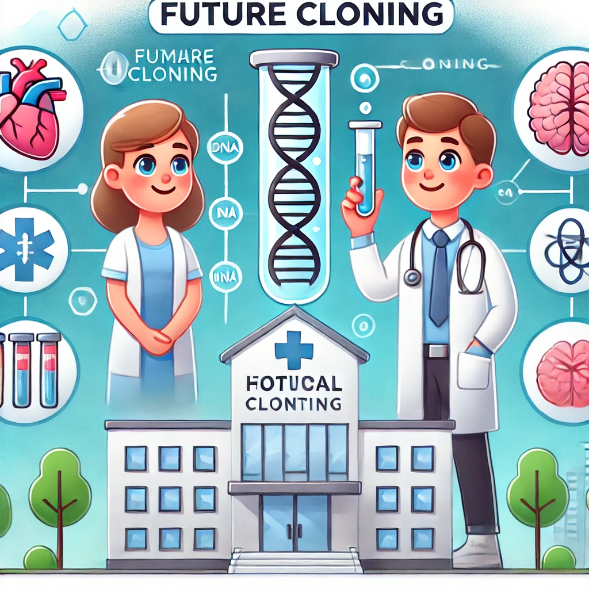

The future of human cloning holds exciting possibilities. As technology advances, we may see safer and more effective cloning techniques that could be used to treat complex medical conditions and provide solutions for infertility.
Human cloning could lead to breakthroughs in organ regeneration, genetic research, and treatment of previously untreatable conditions. However, these advancements must be accompanied by rigorous ethical and legal frameworks to ensure the responsible use of cloning technologies. The journey ahead for human cloning is both promising and challenging.